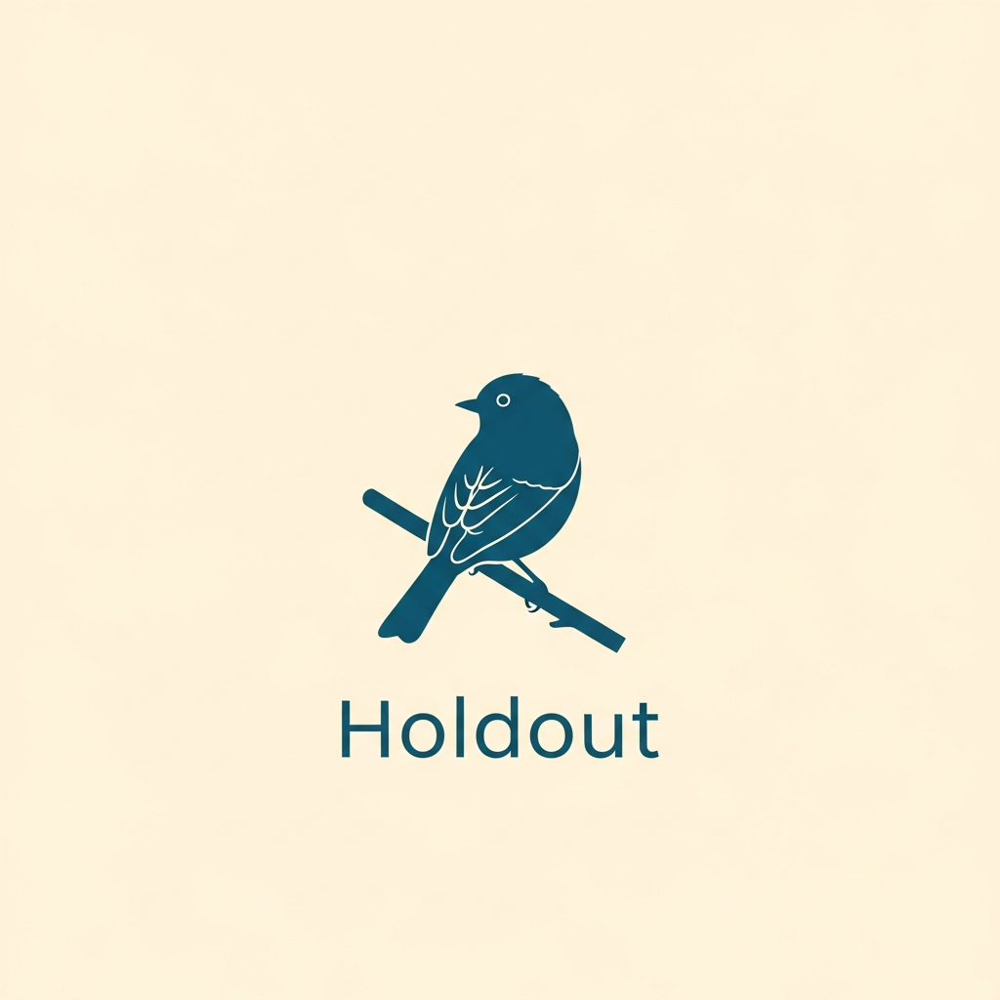

Free
$0forever
- Up to 3 holdouts
- 1 AI post-mortem per holdout per month
- Shareable Holdout cards

HoldoutFor the bird that's been holding out on you
Every committed birder has a nemesis — a species you've chased for years and missed every time. Holdout is where that list lives. We turn the years of dipping into prose worth keeping, and quietly let you know when your holdout is finally reported nearby.
The nemesis bird isn't a feeling we invented. It's been written about by Audubon, the ABA, and 10,000 Birds for decades. No software product had ever taken it seriously. So we built one.
The demo · 30 seconds
Type in your nemesis species, where you've been chasing it, and the rough shape of every near-miss. Holdout's AI essayist returns a 200-word post-mortem in the register of a careful field journal — plus three concrete ideas for your next attempt.
It's free. There's no sign-up. The card is yours to keep.
Write a post-mortem now →How it works
Common name, region, the saga of every near-miss in your own words. Three sentences is enough.
Gemini drafts a 200-word post-mortem in a quiet, observational register. Part field guide, part journal.
Specific suggestions — habitat, season, technique. One is always slightly contrarian. Then go.
Why this exists
Rare-bird alerts in your region — every species, every report. You spend the morning filtering. Holdout is the opposite: alerts only for your nemesis, and a single dignified email when it's reported within the radius you choose.
Wonderful for the bird in front of you. Useless for the bird that's been gone for fifteen years. Holdout is for the second case.
Streaks, XP, badges, leaderboards. None of it fits a hobby that values patience and attention. Holdout has none of those things and never will.
Spreadsheets cannot hold a fifteen-year chase. Holdout's post-mortem essays render the obsession in the register the obsession deserves.
Pricing
$0forever
$4.99/mo · or $39/yr
$129once · first 500 only
Pro waitlist
The free post-mortem tool is live today. Pro alerts (eBird-driven, your-holdouts-only, no marketing) ship in summer 2026. Drop your email and we'll send a single note when they're ready — no other emails.
Common questions
No. eBird's alert system is powerful but undifferentiated — every rare bird, every report. Holdout is the opposite: a single email when your nemesis is reported, in the radius you set, framed by your story. The free tool doesn't use eBird at all — it's purely a written essay generator.
No. Your saga is sent to Gemini for the essay generation only and is not stored verbatim. We keep the species name and a hash of the saga (so we can de-duplicate the Recent feed) — never the full text. Region is stored but never displayed publicly.
Some of the best holdouts are. The whole point is that the bird is yours, not the world's. Holdout doesn't care if it's a Mangrove Cuckoo or an American Robin — the essay engages the saga, not the rarity.
Holdout is built by Major Solutions Studio, a one-tool-a-day micro-incubator. We ship a new product every 24 hours, validated and live. Holdout is one of them.
The post-mortem tool works for any species in any region. eBird alerts (Pro v2) will be available wherever eBird has reasonable coverage — most of the world.